I built a documentary-style war map without After Effects
Six plain-English prompts, a stack of free map data, and Claude Code turned an empty folder into a 31-second geopolitical short film.
MBy MoSidd · AI Made Easy · ~9 min read
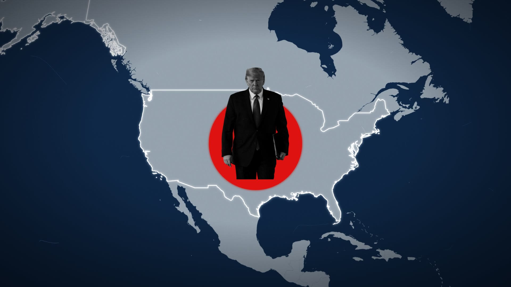
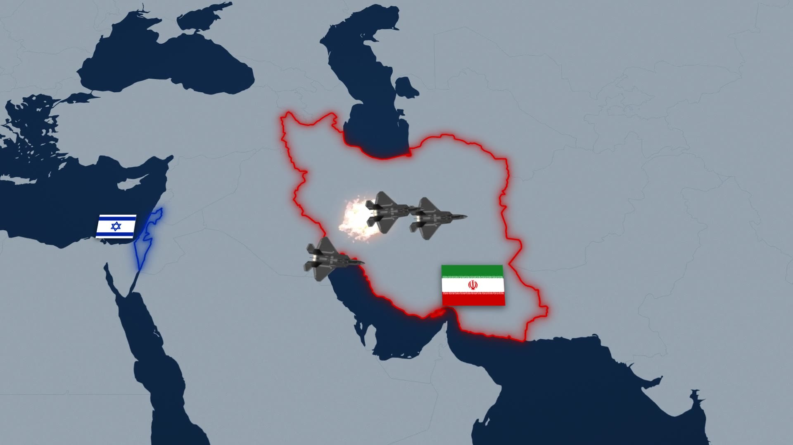
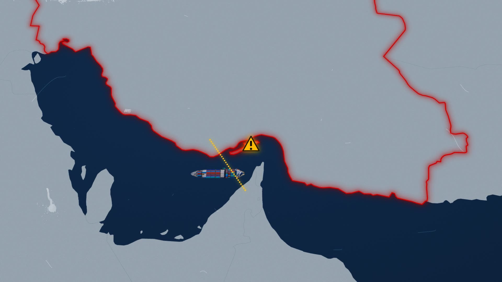
Three frames from the finished film — every pixel of the map drawn by code.
You know the look. Deep navy ocean, a country flooding red, dashed lines racing across a tilted map while a narrator explains the world falling apart. Every news documentary leans on it, and normally it takes After Effects and a lot of keyframes.
I built the whole thing in code instead — a fictional US–Iran scenario in three scenes — and I never drew a single coastline. This post is the exact, repeatable workflow: the three concepts you need, the six prompts I typed, and the finishing layers that make it feel like film.
01Three concepts, zero drawing
Every map you'll see below is generated from data, live, on every frame. You don't need the ~$300 GEOlayers plugin the pros use for this exact look — three free tools do all the work, and you only need a feel for what each one does:
world-atlas — a free dataset with every country's real outline as raw coordinates. A box of pre-cut LEGO pieces: no color, no style, just shapes.
TopoJSON — the clever packaging. Shared borders are stored once, so the whole world is a ~0.7 MB file, and one line of code unpacks it back into usable shapes.
d3-geo — the projection. Earth is a sphere and your screen isn't, so d3-geo flattens every coordinate into an x/y point. The kicker: animate the projection's zoom and centre, and that is your camera move.
The pipeline
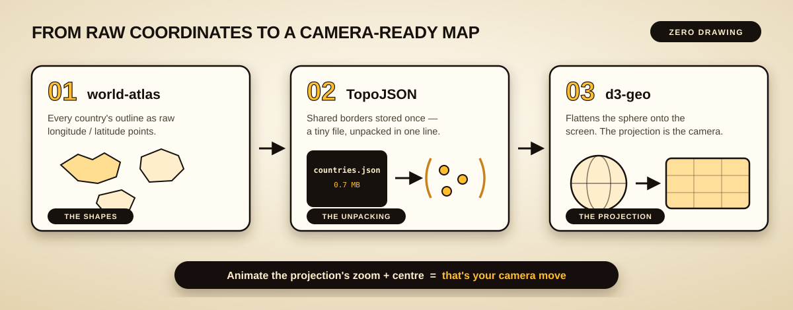
Shapes → unpack → project. The map is a byproduct of data, which is exactly why code beats keyframes here.
With those three ideas in your head, the first prompt sets up the whole engine:
✦Claude CodePrompt 1 · The map engine
▸Set up a new Remotion project for a documentary-style animated map video. Build the world map from real geographic data: get the country shapes from world-atlas, unpack them with TopoJSON, and draw them with d3-geo. Style it like a news documentary — deep navy ocean that darkens at the edges, flat light-grey countries, subtle film grain baked into the map, and tilt the whole map back slightly so it feels like a table-top war map. I also need the ability to highlight any country with a glowing colored outline that draws itself on, smooth camera moves between any two places on the map, and sliders in Remotion Studio for every setting so I can tweak everything visually without touching code. One rule for the entire film: it will be built scene by scene, and every scene must start on the exact frame the previous scene ends on, so the whole thing feels like one continuous shot.
The continuity rule is the secret. Each scene ends on a named camera position and the next scene starts on the very same one — so three separately-built scenes cut together with zero visible seams. Filmmakers call it an invisible cut; here it's just matching numbers.
Frame 1
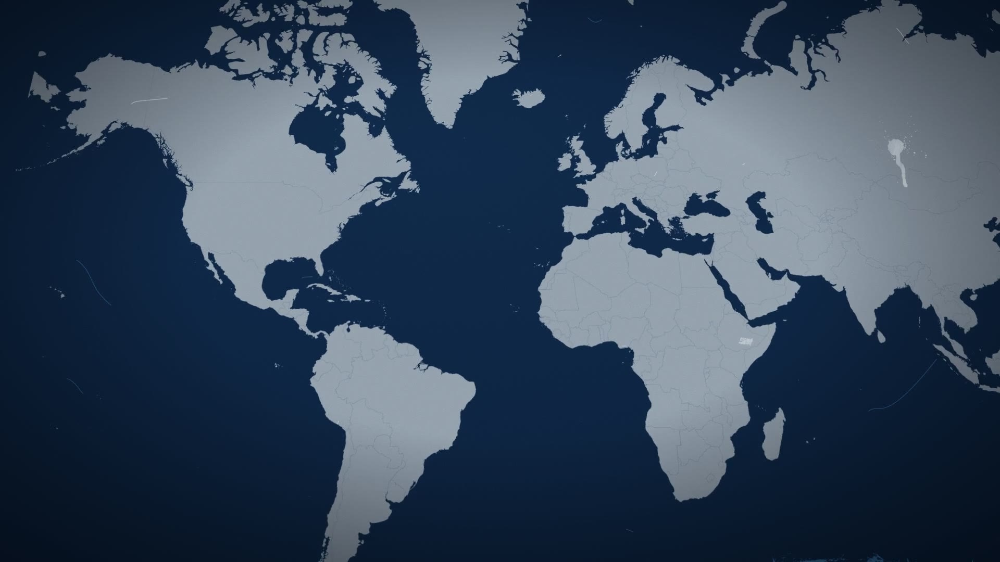
The opening frame: the entire world, drawn from a 0.7 MB data file.
02Scene 1 — Trump rises over America
All my image assets were sitting in the project folder before I typed a word — a transparent full-body Trump cutout, a fighter jet, a missile, a tanker. That way the prompts just point at them.
✦Claude CodePrompt 2 · Scene 1
▸Build Scene 1, about 8 seconds. The camera starts on the full world map, zooms into the US, and holds. The US gets a white glowing outline, then a solid red circle pops up in the middle of the country. There's a transparent full-body photo of Trump already in the assets folder — make him black and white, and have him rise up out of that red circle like it's a hole in the ground: his lower body stays hidden inside the circle. Use an easeOut on the rise so he decelerates into place — smooth settle, not a jarring pop. End the scene with a fast pan across the map that lands already zoomed in on Israel, so Scene 2 can pick up from that exact frame.
Cutout → composited
The assettransparent PNG
In the filmB&W + hole rise
One prompt turns a stock cutout into the scene's centerpiece: grayscale, clipped at the hole line, eased into place.
The one technical word in that prompt is easeOut — an easing is just a one-line function that decides how speed is spread across a move. Trump rises with easeOut (fast start, gentle settle), the cameras fly with easeInOut, and the little pops overshoot on purpose. Scrub all four side by side right here:
Interactive · try it
Play each easing on its own, then grab the scrubber and freeze them mid-move.
03Scene 2 — jets, strikes, and a keying trick
✦Claude CodePrompt 3 · Scene 2
▸Build Scene 2, about 8 seconds, starting on the exact Israel frame Scene 1 ended on. Outline Israel in its flag blue and Iran in its flag red, and have each country's flag spring up from the map and stay planted. The top-down fighter jet image is already in the assets folder: three jets take off from Israel and fly toward Iran while the camera pans along with them. When they hit their targets, play the explosion video from the folder — it's on a black background, so use a screen blend to key it out and only the fireball shows — and leave a glowing red mark on each spot. The jets should fly through the explosions and keep going east until they leave the frame. At the very end, spring the Iran flag back out of the map so the next scene starts clean.
The beats
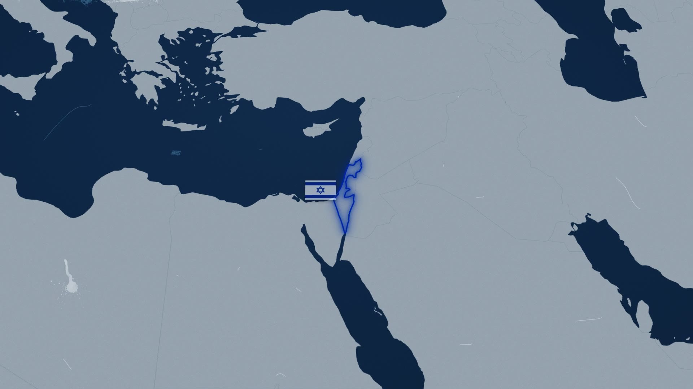
Israel lights up in flag blue
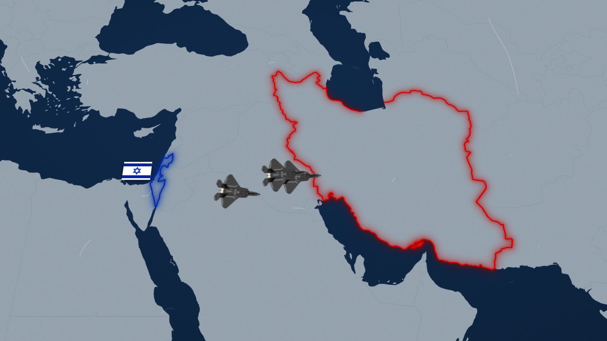
Jets cross, camera followsStrikes land — keyed explosion video
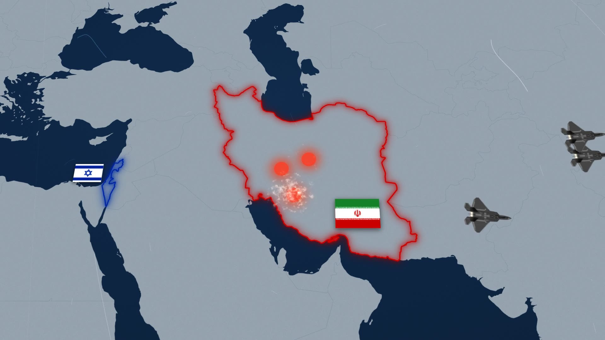
Red marks linger on Iran
Four beats of Scene 2 — outlines, flight, strike, aftermath.
The keying trick: nothing gets cut out. A screen blend can only add light — pure black has no light to add, so it vanishes, and the near-white fireball punches through. Same reason explosion and grain packs ship on black. Flip the blend modes yourself, right below.
Interactive · try it
Switch the blend mode to "normal" and the black box comes right back.
04Scene 3 — closing the Strait of Hormuz
✦Claude CodePrompt 4 · Scene 3
▸Build Scene 3, about 15 seconds, starting on the Iran frame Scene 2 ended on. Zoom in tight on the Strait of Hormuz so the strait is clearly the star of the shot. Iran fires a barrage of at least 20 missiles (the missile image is already in the folder) at slightly random intervals, all streaking west out of the frame. Then a dotted line draws itself across the strait to show the blockade, an oil tanker (also in the folder) slowly glides in and gets stuck behind the line, and a flashing warning triangle appears at the blockade. Sliders for everything: the zoom, the missile barrage, the blockade line's position and angle, the tanker, and the warning sign.
The barrage
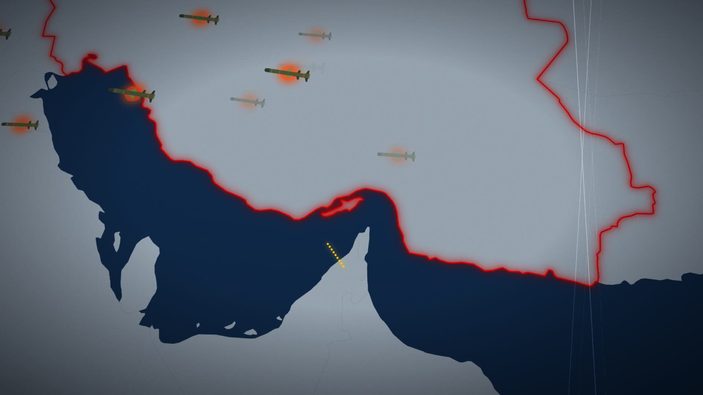
22 missiles at randomized intervals — one slider controls the count.The blockadeThe closing tableau: the dotted line, the stuck tanker, and the flashing warning triangle.
05One continuous shot + the film look
Because every scene starts on its predecessor's final frame, stitching is trivial — the film plays as one unbroken camera move from a world view to a strait 10,000 km away.
✦Claude CodePrompt 5 · Master + film look
▸Combine the three scenes into one master timeline. They already start and end on matching frames, so the cuts should be seamless — the whole film should play like one continuous shot. Then the film look: there's a film-grain-and-dust video already in the assets folder. Blend it over the entire film — same trick as the explosion: it's bright grain on a black background, so a blend mode keys it out. Give me sliders for the grain's opacity and blend style, and keep the overlay out of the live preview so scrubbing stays fast — only bake it into the final render.
This is also where the slider workflow pays off. Every number you saw in a prompt — circle size, jet speed, blockade angle, grain opacity — is a live control in Remotion Studio. Tweak, watch, save; the values write themselves back into the code.
Remotion Studio
vox-remotion — Remotion Studio▶ Render
Compositions
Scene1-US
Scene2-Israel
Scene3-Hormuz
Master
00:00:1800:00:31
Props
3.4
#FFD23A
22
Save
The editing surface: pick a scene, drag sliders, hit save. No timelines, no keyframes.Before → after
Clean renderno grain
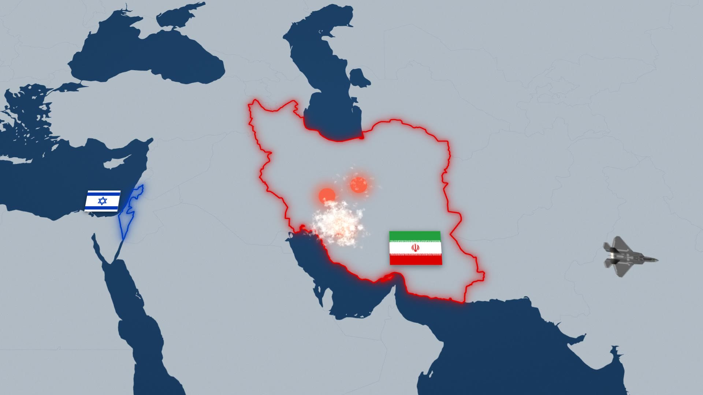
The film lookgrain + dust
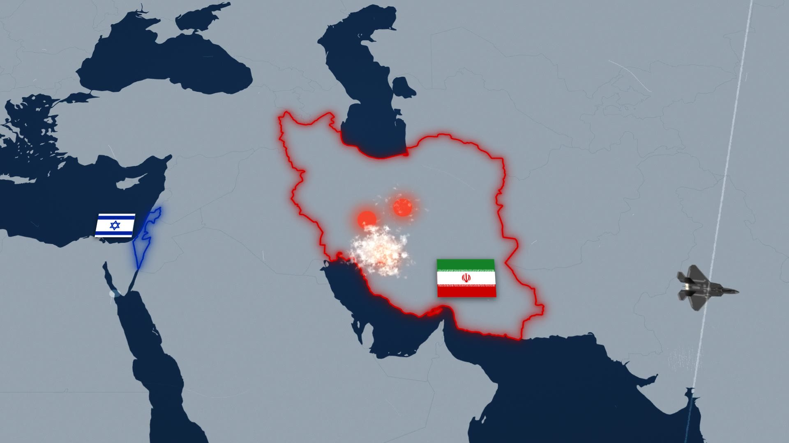
The same frame, one overlay apart. Your brain reads imperfection as "shot on film".
Interactive · try it
Hit Auto A/B and watch the same three seconds flip between clean and filmic.
06A narrator, a score, and the foley
Sound happens in the order you'd cast a film: pick the narrator, then the score, then glue every action to a sound. The voiceover is an AI preset voice (I auditioned ten and landed on a serious documentary read), the music came from a one-sentence prompt to a music model, and the effects were generated one by one. Audition all of it right here:
Interactive · try it
Tap any voice, the score, or a foley row — one player, no overlapping audio.
✦Claude CodePrompt 6 · Sound + mix
▸Now the audio. Generate a dark, slow-building tension music bed for the full runtime. Add the three voiceover lines, one per scene, with natural dead air between them. Then layer in the sound effects: whooshes on the camera moves, a riser as Trump emerges, jet roars, explosion booms, missile launches, a sonar ping when the blockade line draws itself, an alarm on the flashing warning, and a foghorn when the tanker stops. Give me mixing controls: one slider for the voiceover that I can push above 100%, one for the music, a master slider for all sound effects plus an individual slider for every effect type, and controls to nudge when each voiceover line starts. Then render the final video.
The timelineThe 31-second master: scene blocks, voiceover placement, and the score running underneath.
The foley sheet
Every sound is glued to a specific on-screen action — that glue is what sells the film.
Sound
What it scores
Where it came from
Scene
whoosh
Every camera zoom and pan
AI sound model
All
deep whoosh
The fast US → Israel pan
Pitched-down version of the whoosh
1
riser
Trump rising out of the hole
ElevenLabs sound effects
1
blip
The red circle pop, country outlines lighting up
ElevenLabs sound effects
1 · 2
jet roar
F-35s launching and passing
ElevenLabs sound effects
2
explosion
The three strikes on Iran
AI sound model
2
missile
The 20-missile barrage
ElevenLabs sound effects
3
sonar
The blockade line drawing across the strait
ElevenLabs sound effects
3
alarm
The flashing warning triangle
ElevenLabs sound effects
3
foghorn
The tanker stuck at the blockade
AI sound model
3
The music bed was generated by Magnific's music model from one sentence; the narrator is an AI preset voice (Sterling) reading three lines.
31s
Runtime
1080p
Final render
3
Seamless scenes
6
Prompts typed
22
Missiles fired
14
Audio layers
The whole thing in one line
Free map data + six plain-English prompts + slider tweaks in Remotion Studio = a documentary-style war map, scored and mixed, rendered as one continuous 31-second shot — and not a single keyframe.
Takeaways
Maps are data, not drawings. world-atlas gives the shapes, TopoJSON ships them small, d3-geo flattens them — and animating the projection is the camera.
Prompt outcomes, not implementations. Every prompt describes what should appear on screen. The only technical words I ever typed were the ones worth teaching: easeOut and screen blend.
The continuity rule buys free editing. End every scene on the next scene's first frame and the cuts vanish — no crossfades, no cleanup.
One blend mode, two jobs. Screen blending keyed both the explosions and the film grain, because both ship as light on black.
Sliders beat keyframes. Asking for a control panel up front meant every correction after the build was a drag-and-save, not a re-prompt.